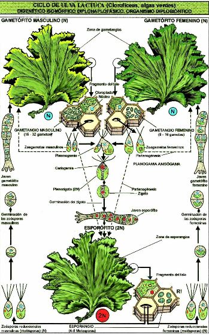
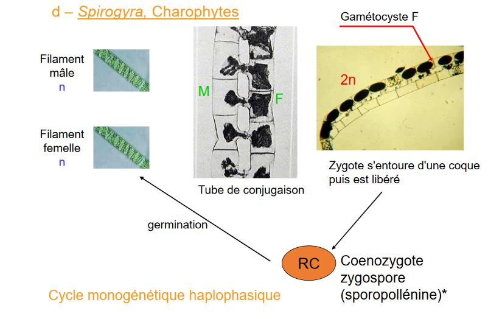
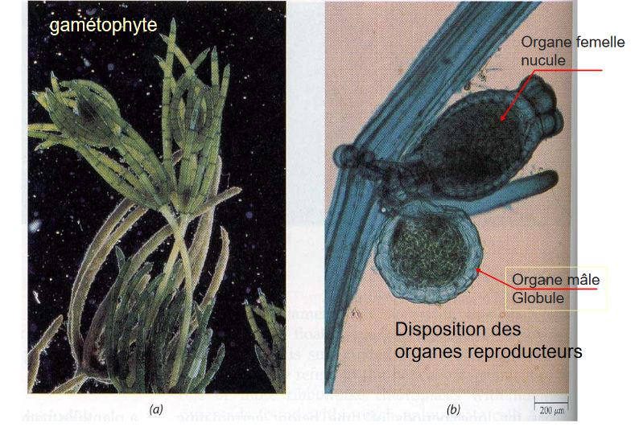
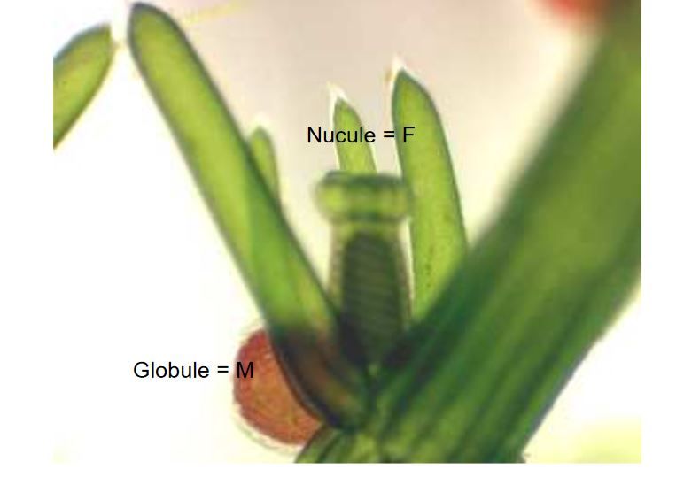
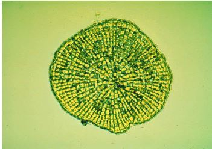
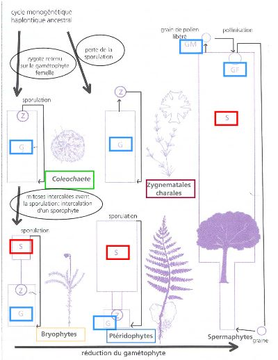

La reproduction
Importance de l'évolution du cycle de reproduction des chlorobiontes : aboutit à celui des embryophytes


Différents cycles rencontrés chez les algues
- Monogénétique haplophasique : une génération haploïde
- Monogénétique diplophasique : une génération diploïde
- Digénétique haplo-diplophasique
- Trigénétique haplo-diplophasique (deux ou trois générations, haploïde ou diploïde)
A) Chlamydomonas, Chlorophyceae

Cycle monogénétique haploide : majorité des chlorophycées
Reproduction sexuée : si conditions deviennent défavorable
B) Acrosiphonia spinescens
Algue filamenteuse, articles allongés, Plurinuclées
Thalle = gamétophyte
Article court = gamétocyste

Le zygote s'accroît sans se diviser
2 interprétations :
1) La phase "Codiolum" considérée par certains comme une phase sporophytique, cycle digénétique sans toutefois comporter de phase diploïde
2) L'absence de mitose au stade "Codiolum" fait interpréter le cycle comme monogénétique haplophasique
C) Ulva lactuca, Chlorophyte
Digénétique isomorphe
Planogame plus ou moins isogame

D) Spirogyra, Charophytes

E) Chara, Chlorophyte appartiennent aux Charophycées



Bilan :
- Gamète flagellé
- Fécondation dans le nucule
- Hypnozygote (gyrogonite pour les paléontologues) libéré dans le milieu (dormance)
- Réduction chromatique dans l'hypnozygote
- Germination
- Absence de sporulation
Cycle haplophasique
F) Coleochaete, chlorophyte appartiennent aux charophycées
"Algues vertes"
- formes filamenteuses
- formes en disques ramifiés
Developpement sur un tronc d'arbre, tige de joncs, sur rochers
Existence d'appendices rigides (poil incolore)

Extémité de certains filaments :
- developpement de spermatocyste
- libération d'un petit spermatozoïde
- developppement d'oogone terminé par pseudotrichogyne
- ouverture : permet la passage du spermatozoïde
Fécondation de l'oosphère
- Zygote reste sur le gamétophyte femelle
- Augmente de volume
- Mise en place d'un revêtement de filaments
- Lien trophique entre zygote et filaments
Dormance -> Hypnozygote

C'est un cycle Monogénétique haplophasique
Particularité : Un recouvrement provenant du gamétophyte recouvre le zygote et crée des liens trophiques avec lui
CYCLE TRES IMPORTANT AU PLAN EVOLUTIF
Si des mitoses végétatives s'intercalent entre la formation du zygote et la méïose : obtention d'un sporophyte parasite du gamétophyte
